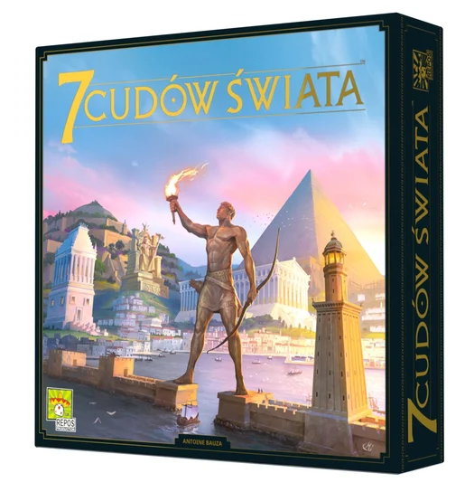

szczegóły produktu
7 cudów świata

cena: 129 zł
rodzaj: strategiczna
liczba graczy: 3-7
wydawnictwo: Rebel
czas gry: 40 min
opis: Zostań przywódcą jednego z siedmiu wielkich miast świata antycznego. Zbieraj surowce ze swoich ziem, weź udział w odwiecznym wyścigu cywilizacyjnym, nawiąż kontakty handlowe i stwórz militarną potęgę. Pozostaw ślad na kartach historii budując cud architektury, który przetrwa wieki. 7 cudów świata to świetnie zbalansowana gra o rozwoju cywilizacji, która łączy proste zasady i dynamiczną rozgrywkę z planowaniem i strategicznym myśleniem. Uczestnicy wcielają się w przywódców starożytnych miast, które starają się poprowadzić do jak najbardziej optymalnego rozwoju.
powrót do strony głównej